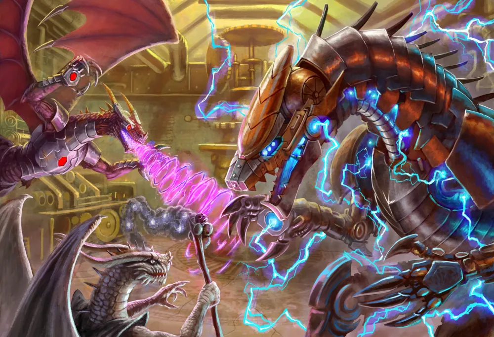

|
世上鲜有众多永光龙聚居之地，不过在我的旅途与考察中，倒也记录下了数十处颇具规模的定居点。但专门围绕某一个特定永光龙家族建立的聚落更是凤毛麟角（此处的“家族”指的是包含五种不同巨龙传承的谱系家族，而非具体的亲族血脉群体）。 这一现象背后自有缘由：一旦一条巨龙选择施行永恒之光仪式，从某种意义上说，他们便已背离了传统价值观。我们所有永光龙皆是如此。正因如此，这一共同经历将所有永光龙凝聚在了一起――哪怕只是微妙的一丝羁绊――同时也让他们与原本传承中的亲友同族拉开了一点距离。换言之，一条永光狂怒龙可能会觉得自己与一条永光皮克精龙更有共同语言，反倒胜过其他狂怒龙；尽管一条传统派狂怒龙与传统派皮克精龙之间往往毫无交集。 因此，听说世上竟存在着一处几乎完全由永光异类龙组成的定居点，或许会令人大感意外。他们自称为“异类龙之岛”。我私心觉得他们起这个名字多少带着点自嘲与调侃，但说不定他们只是想要一个直截了当的名字，好把这处聚落的性质与存在缘由写得明明白白，让任何旁观者都能一目了然。 无论这名字的真实来历如何，“异类龙之岛”不仅是研究永恒之光仪式整体的绝佳范例，更是深入了解异类龙的非凡宝库――尽管是从永光龙的视角出发。义体龙、厄运龙、流变龙、相位龙与魔泉龙在寻常情况下各自都极难寻觅；而在我的旅途中，我发现他们往往将巢穴筑于险恶或极其奇诡的僻远之地，不仅人迹罕至，靠近前还必须做足特殊的防范措施。然而在异类龙之岛上，我不仅能与这些不同传承的永光龙接连交谈，有时甚至能让他们同席共话，从而对比印证他们的回答与解释，并请他们当面阐明自己对彼此言论的看法。借此，我得以提炼出更为细腻入微的认知，看清究竟是什么将整个异类龙家族维系为一个整体。 显然，能为我关于永恒之光仪式与异类龙的两大课题找到如此丰富的一手素材，自然让我带着几分学者私心而兴奋不已。但异类龙之岛对我而言绝不仅仅是一座资料库。它更是一个充满活力的社群，汇聚了形形色色有趣的人物与不寻常的暗流。既然他们都是异类龙，聚落里几乎每一位居民身上都带着某种魔法怪癖或异状，而且有时还与我们对传统派异类龙的预期截然不同。诚然，拜永恒之光仪式所赐，永光异类龙有时会拥有唯独属于自身的独特魔法特征，宛如一枚专属的“魔法指纹”。而这还远不是他们岛上日常生活中唯一令人着迷的侧面。 岛上的聚落规模不大，严格来说并没有划分什么“城区”，居住于此的异类龙们跨越各自传承的界限彼此交往。据我对他们解释的理解，岛上的治理架构似乎主要围绕四大魔法传统建立，这意味着执政议会是按四方而非五脉来划分的――这也再次证明，血统传承在此地并不被视为决定性的因素。 聚落里居住的永光异类龙远不足百数，因此这里绝算不上规模宏大，但对于永光异类龙这样一个小众群体而言，这依然是个相当可观的数字。议会的运作方式是：理论上聚落里的每一条巨龙都是拥有投票权的议会成员；但在实际运作中，大多数巨龙并不想每次议会都全程列席，因此岛上会不定期召开要求全员出席的“全体会议”，进行重大表决并推选出四大魔法传统的代表领袖；而在日常例会中，任何巨龙都欢迎随时到场亲自投票，至于未出席的成员，其投票权则由其所属传统派系的代表领袖代为行使。亲爱的读者，你或许会以为巨龙们最终加入的魔法传统会与自身传承一一对应，从而形成事实上的血统分化；但实际上，这些派系更看重一条巨龙的个人成长方向与哲学理念，因此奥术派系中有不少义体龙法师，异能派系中也有许多魔泉龙吟游诗人，诸如此类，不胜枚举。 岛上的生活充分折射出永光龙的巧思与决断，以及他们对挑战永无止境的渴求――唯有不断将自身魔法逼至极限，才能实现永恒之光仪式设计之初所赋予的飞速成长。在这座孤悬海外的岛屿上，许多日常便利设施并非依靠大陆上习以为常的凡俗手段维持，而是仰仗着别出心裁的魔法配方与奇妙装置，专门用来引导并善用异类龙体内满溢而出的魔力。 话虽如此，倘若一切魔法都稳定可靠、分毫不差地按预期运转，那异类龙也就不叫异类龙了。即便在我短暂造访期间，我也亲历了好几桩古怪乃至无法解释的魔法小事故。通常它们不过是些无伤大雅的小麻烦，只要再试一次就能达成预期效果。这让它们给人的感觉更像是妙趣横生的奇想乃至滑稽插曲，而非令人恼火或焦虑的隐患――不过我也听闻过一些往事，据说过去曾发生过魔力彻底失控、酿成堪忧局面的先例。好在这类事件似乎寥寥无几，况且用非魔法手段处理日常事务也未必就绝对不会出岔子；只不过相比平庸惯例那悄无声息却同样致命的失误，一场声光绚烂的魔法灾难总是更容易吸引旁人的目光罢了。 异类龙之岛文化中最美妙的一点，无疑是他们旺盛的求知欲与实验精神――尽管在某些时候，就连我也觉得他们未免有点走火入魔了。忠实的读者，如你所知，我自己也算是个狂热学者。我不止一次受邀作为受试者参加某项试验研究，附带的免责声明与弃权书厚厚一叠，要求我签字放弃追究主持实验的那位永光异类龙的一切责任。这可让我不得不三思而行。其中最明目张胆的一次交锋，莫过于某条永光义体龙一本正经地问我，愿不愿意为了深入探索我独特的生理构造而接受“就一点点活体解剖”。他们信誓旦旦地向我保证，这将是“为了科学”而作出的崇高牺牲。挂念我的读者，自不必说，我断然谢绝了这些实验，因此鄙人至今依然身子骨硬朗、毫发无伤。 ――永光贤者卡利赞德雷克斯 成为巨龙！ |
 异类龙之岛 |